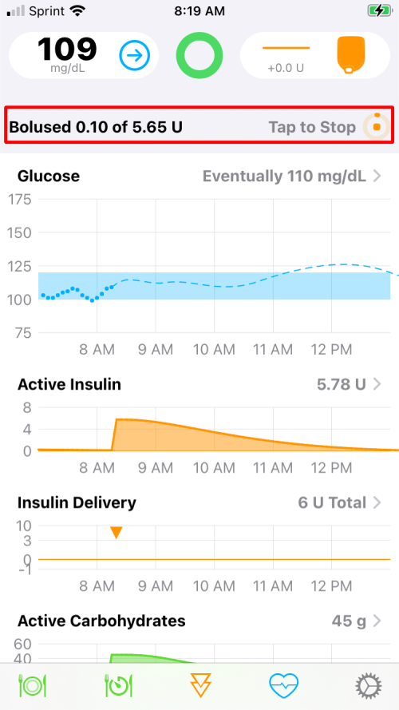

Omnipod FAQs
Which pods work with the Loop app?¶
You can use DASH and Eros Omnipod pods with the Loop app. You cannot use Omnipod 5 pods.
You do not need the Omnipod Personal Diabetes Manager (PDM), just the pod supplies. Your insurance or pharmacy coverage may cover some of the cost.
Alternative Names for Omnipod Pods
All three types of pods can be packaged five to a box, don't let the 5-pack indication confuse you.
-
Eros pods are also known as Classic or UST400
- The Reference number on the boxes should be similar to POD-ZXP425
- They have a clear needle cap
- Pharmacy sites sometimes may refer to the Eros pods as Gen 3 but they are the same exact pods
-
DASH pods have DASH in the name
- The Reference number on the box should be similar to POD-BLE-P1-525 (note the P)
- They have a blue needle cap
-
Omnipod 5 pods have 5 in the name
- The Reference number on the box should be similar to POD-BLE-H1-525 (note the H)
- They have a clear needle cap
DASH pumps communicate with the phone via Bluetooth so they do not require a RileyLink compatible device.
What about Tidepool Loop?¶
Tidepool Loop was approved by the FDA in Jan 2023, but at the current time, there are no announced pump or CGM partners. What does this mean?
Tidepool Loop, cleared by the FDA, is the first:
- App that provides automated insulin dosing and is configured to be fully interoperable with pump and CGM partners
- App that originated as a patient-led initiative
With this approval, there is now an FDA-approved pathway for independent selection of an app, a pump, and a CGM. Stay tuned for updates at https://tidepool.org/tidepool-loop.
Do I still need a PDM with Omnipod Loop?¶
No, pods are monogamous little creatures. They will pair with only one device at a time for safety reasons...so a pod is either paired with a PDM or your Loop app on your iPhone. In other words, your PDM can stay in the diabetes closet while you are Looping. You cannot use the PDM for a pod that has been activated with the Loop app. That doesn't mean you should get rid of your PDM if you have one. Instead, keep it for backup situations if you lose your phone. See below for what to do if you lose your phone or RileyLink.
Can I cancel a bolus?¶
Yes, you can cancel a bolus in progress. In fact, because it is very easy to cancel, make sure your phone is locked prior to being put away to avoid inadvertently cancelling a bolus. (This behavior is very similar to the Insulet PDM - which also needs to be locked once a bolus has started.)
As soon as a bolus is initiated, look at your phone in portrait orientation. You will see a bolus message indicating the progress of the bolus. This message is highlighted with a red rectangle in the graphic below. If you tap on this part of the display, the bolus is immediately cancelled.
- The displayed amount
Bolusedis based on the time since the bolus was started - The Loop app will present that graphic for the entire time the bolus is in progress with the delivery amount updated based on time
- Once the bolus completes, the Loop app updates the actual delivery amount based on communication with the pod (taking into account any interruption of that bolus from the user or a pod error)

Can I cancel a temp basal?¶
Cancel Temp Basal with the Loop app¶
With Loop 3, disabling the setting for Closed-Loop immediately restores the basal rate on the pump to the scheduled basal rate, which effectively cancels the temp basal.
You can tap on disable Closed-Loop and then immediately tap on enable Closed-Loop if all you want to do is cancel the current temp basal. If you do restore Closed-Loop, then Loop will resume automatic insulin delivery adjustments within 5 minutes.
Bolus in progress
Even if a bolus is in progress, you can still switch to Open-Loop and restore scheduled basal. The current bolus continues unless you separately cancel the bolus.
Can I set my own temp basal on Loop?¶
With version 3, the Loop app provides a Manual Temp Basal feature.
What if I lose my phone or RileyLink?¶
For pod users, your pod will finish any currently running temporary basal rate and then revert back to your scheduled basal rate. Without a phone or RileyLink, however, you will not be able to affect any pod use; no basal change, suspend, cancel, or bolus. To do anything other than let basals continue, you will need to take action depending on the situation.
-
Lost RileyLink only: You can replace your missing RileyLink with one from your backup supplies. No problem to switch out to a different Rileylink mid-pod session. If you don't have a backup RileyLink to use, then you will need to remove the pod and put on a new pod paired with your PDM until you can get a new RileyLink. In the interim, you are still getting basal from the pod. If you are taking bolus insulin via injection, just add it to Apple Health under insulin. The Loop app will read it and keep making predictions for you. Once you inject, then add the carbs that go with that injection into Loop.
-
Lost iPhone only: You will need to remove the pod and put on a new pod paired with your PDM or a backup phone (with a copy of the Loop app on it). You cannot use the old pod with a new device. In the interim, the pod will continue to deliver your scheduled basal until the pod reaches 80 hours. See New Phone for more information.
-
Lost both RileyLink and phone: You're having a really bad day. You'll need a hug and to follow the same directions as if you lost the phone as shown in the bullet above.
Is there an increase in pod failures on Loop?¶
There is more communication between the pod and the controller (your Loop phone) than is typical with the PDM (Insulet provided controller). This increases the load on the pod battery. Most people have no increase in pod failures, but there are steps to take to limit "extra pod battery use". Every time the Loop app requests an update of the pod state or issues a command (bolus, basal schedule, temp basal), messages are exchanged with the pod.
- Set your correction range to be 10 to 20 mg/dL (0.5 to 1.1 mmol/L) instead of a single number
- The number of commands will be reduced
- An earlier release of Loop, version 3.0.0, pinged the pods more frequently to refresh status more quickly when the phone was unlocked and the Loop app was in the foreground
- This did cause more failures and was modified for version 3.2.x.
- The pod state is updated every 3 minutes for DASH and every 5 minutes for Eros
- If uncertain communications are detected such that the Loop app cannot determine if a dosing command sent to the pod was actually received, the app will try once a minute to get a response
- The combination of Eros pods with a RileyLink device with poor signal leading to uncertain comms may cause excessive battery use and contribute to pod faults
What do I do if a pod fails to pair?¶
If you get a pod that is failing to pair, please see this page for steps on how to fix the problem. Follow these steps before filling and trying another pod. If the pod is not screaming, you can probably recover it.
What do you do to stop a screaming pod?¶
Screaming pods indicate the pod is out of insulin or out of time (80 hours) or there has been a critical pod fault. In all these cases, there is no more delivery of insulin.
The first step is to use your phone to Deactivate the pod. You may need to go to the pod settings and tap on the Replace Pod row or the app may take you to the screen with a Deactivate button directly. This only works if the app is able to communicate with the pod. Sometimes this is not possible. After you attempt to deactivate two times, the app will "discard" the pod as active if communication fails and enable you to pair a new pod. But you still need to make that noise go away.
If you are not successful at deactivating a pod and you've tried the steps at Reset-Loop-to-Pump-Communications, make sure the old pod is removed from the area before trying to connect a new pod. (Placing it in a microwave temporarily prevents the phone from detecting that pod.) The paperclip trick (next paragraph) only breaks the sound connection, the pod electronics is still active.
Once you have removed the screaming pod, it can be silenced using a paperclip. Simply put the paperclip in the small hole that is on the bottom (the side opposite where the cannula is) of the pod as shown. Push the paperclip in until you hear a little click, that click is breaking the circuit that connects the speaker to the electronics.

What Are the Pod Priming and Start Delays?¶
- You have 2 hours after you fill the Pod with insulin to do a successful prime (this happens when you tap on
Pair Podon the Omnipod screen) - You have 1 hour after the prime completes to insert the cannula
If you exceed these time limits, the pod becomes useless.
Omnipod User Manual on Pod Start Delay
page 85:
Note: After filling the Pod, continue to the next step immediately.
If two hours pass before activating the filled Pod, the Pod becomes unusable.
page 86:
Note: After activating, the Pod beeps every 5 minutes until you apply it.
If you do not apply it and do not begin insulin delivery within 60 minutes after activating, the Pod becomes unusable.
| Window | Delay |
|---|---|
| Filling to Priming | 2 Hours |
| Priming to Canula Insertion | 1 Hour |
Below is a state diagram that will give you a more visual representation.
stateDiagram-v2
state 2h_timeout_reached <<choice>>
state 1h_timeout_reached <<choice>>
filled: Pod Filled
primed: Pod Primed
inserted: Pod Canula Inserted
2h_window: 2-Hour Window
2h_timeout: Exceeded 2-Hour Limit?
1h_window: 1-Hour Window
1h_timeout: Exceeded 1-Hour Limit?
pod_useless: Pod is Useless
[*] --> filled
filled --> 2h_window
state 2h_window {
[*] --> 2h_timeout
}
2h_window --> 2h_timeout
2h_timeout --> 2h_timeout_reached
2h_timeout_reached --> pod_useless: Yes
2h_timeout_reached --> primed: No
primed --> 1h_window
state 1h_window {
[*] --> 1h_timeout
}
1h_timeout --> 1h_timeout_reached
1h_timeout_reached --> pod_useless: Yes
1h_timeout_reached --> inserted: No
inserted --> [*]What to do if the Pod becomes useless?
- Be sure to break the sound card connection before discarding the Pod - it will scream after 80 hours, if not sooner.
- Be sure to move the old Pod far away before attempting to pair a new Pod.